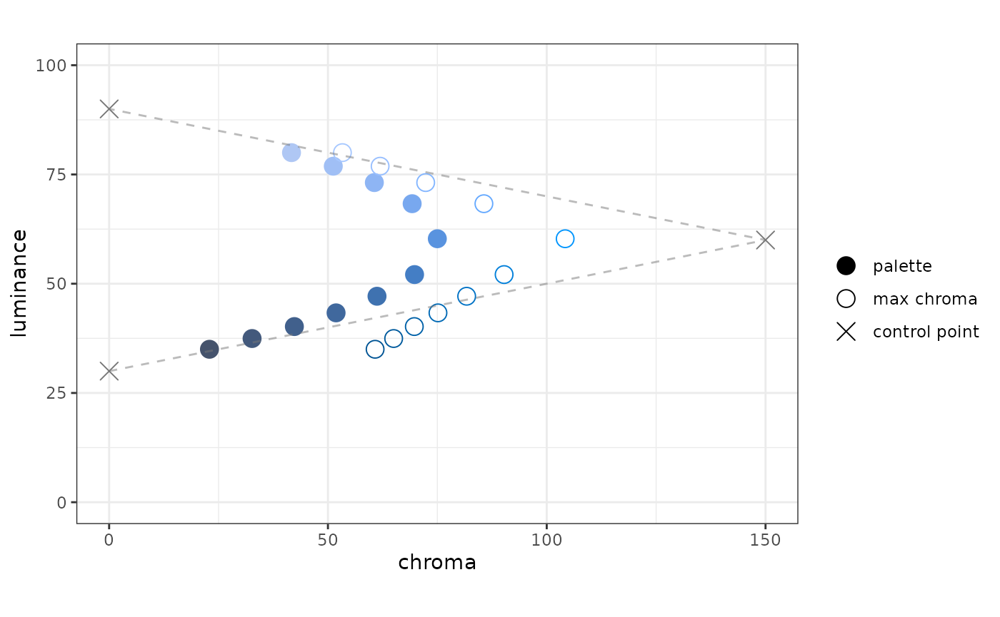
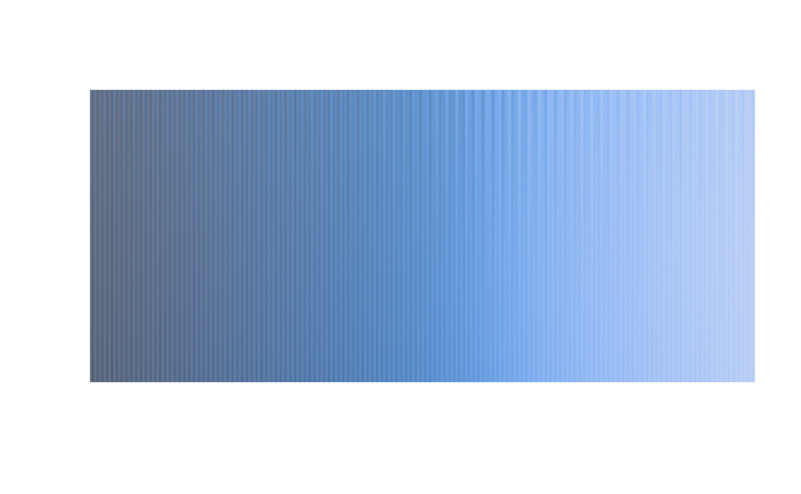
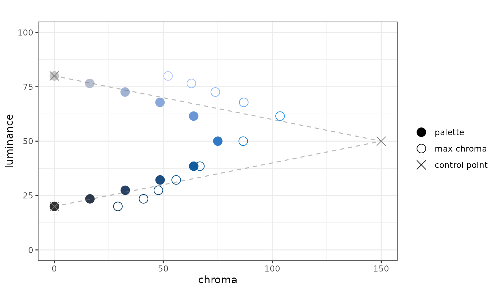

The goal of colorpath is to help you design sequential (and diverging) color palettes that are effective and perceptually uniform.
At the moment, this vignette has an audience of one. As we get our legs under us, this vignette will become more-accessible.
This package uses the idea of a color path; I use this term to describe a trajectory through LUV colorspace from which one could extract sequential palettes for each of light and dark mode. This way, a light-mode palette and a dark-mode palette can look like they came from the same place.
There are a few principles this package rests on:
The HCL colorspace is a relatively intuitive way to describe colors.
The LUV colorspace is approximately perceptually-uniform; i.e. the Euclidean distance between two colors in LUV space corresponds well with the perceptual difference between those colors.
The Euclidean distance along a Bézier spline can be computed readily.
Usage
The idea is to start with a data frame of HCL values - these will be coordinates of control-points for a Bézier spline. If you want to learn more about the HCL colorspace, the folks who develop the colorspace package offer a comprehensive introduction, a color-picker app, as well as other apps.
Proscribe colors
This package has a such a sample HCL dataset:
df_hcl_blues #> # A tibble: 3 x 3 #> h c l #> <dbl> <dbl> <dbl> #> 1 250 0 30 #> 2 250 150 60 #> 3 250 0 90
A few things to notice here:
there are three columns:
h,c, andlfor hue, chroma, and luminanceluminance goes from low to high
chroma begins and ends at zero, has a peak in the middle
hue is constant
As you will see, this is not the most exciting set of blues. There should be more chroma. At some point a better demonstration set should be chosen, but it gets the job done for now. For example, there is no reason to have only three control points, and there is no reason you can’t vary the hue. That said, I think it is a good idea that, for a given “single-ish hue” color path, the hue should vary linearly with the luminance. s We can convert this data frame into an LUV matrix:
mat_luv_blues <- as_mat_luv(df_hcl_blues) round(mat_luv_blues, 3) #> l u v #> [1,] 30 -0.003 -0.009 #> [2,] 60 -51.303 -140.954 #> [3,] 90 -0.003 -0.009
The LUV space is a Cartesian form of the HCL space; HCL is a polar form of LUV. If chroma is zero, we should expect u and v both to be zero; we can see that this is not the case here. This is because the function as_mat_luv() has an argument chroma_min whose default is 0.01.
This is a trick used to preserve the hue of a color if its chroma is zero; a color with chroma value of 0.01 is imperceptible from thE corresponding color with a chroma value of 0.
Also, for convenience, mat_luv_blues is an exported dataset.
Simple path
The coordinates-set mat_luv_blues represents a set of control points for a Bézier spline in LUV space.
Let’s create the spline:
path_blues <- pal_luv_bezier(mat_luv_blues, rescale_path = FALSE) path_blues #> function(x): #> input: vector (0 <= x <= 1) #> output: matrix LUV values #> #> Bézier spline based on these control points: #> l u v #> [1,] 30 -0.003 -0.009 #> [2,] 60 -51.303 -140.954 #> [3,] 90 -0.003 -0.009
As you can see, this is a palette function. It takes a numeric input; however, instead of hex-codes, it returns LUV values:
path_blues(c(0, 0.5, 1)) %>% round(3) #> l u v #> [1,] 30 -0.003 -0.009 #> [2,] 60 -25.653 -70.482 #> [3,] 90 -0.003 -0.009
We can create a ggplot to see what this path looks like in the chroma-luminance plane. The plot function takes the palette function as an argument.
plot_cl(path_blues)

In the plot, we see three things:
- points in the palette
- the control points for the Bézier spline
- for each point plotted from the palette, the color with the maximum chroma, given the hue and luminance.
One of the plot specifications is that the chroma axis be scaled proportionately to the luminance axis; we specify the aspect ratio to be one.
When we created path_blues, pal_luv_bezier() used an option rescale_path = FALSE. In the plot, you will see that the points in the palette are equally spaced in luminance. However, they are not equally spaced in terms of the distance along the path.
Underneath the hood, we use the bezier package to calculate the splines. It also has a function to calculate the distance along the path. We can use this information to rescale the input to the palette function to be perceptually uniform, insofar as LUV space is perceptually uniform.
Rescaled path
In pal_luv_bezier(), the default value for rescale_path is TRUE. This invokes the distance calculation, which can take a few seconds, then rescales the function input:
pal_blues_rescaled <- pal_luv_bezier(mat_luv_blues) plot_cl(pal_blues_rescaled, label_hue = TRUE)

You’ll notice a couple of things: the palette points are equally-spaced along the color path, and there are now labels for the value of the hue for each control point. These labels can be informative while developing a color path, but I can see how they might distract from a “finished product”.
Path vs. Palette
In my mind a color path contains palettes or parts of palettes - the idea would be, say for a corporate palette, to have a series of color paths, say a set of blues, oranges, and greens. From these paths sequential and diverging palettes could be composed from parts of these paths.
Sequential palette (light mode)
In my mind, a sequential palette for light mode should have high luminance at the low end of the scale and low luminance at the high end of the scale.
We can make such a palette by applying a rescaler function to the path function. One of the rescaler functions work using the luminance of a the path function - in essence, you specify the luminance values you want to form the ends of the color scale.
# there is an opportunity to make this cleaner, I don't like to specify # pal_blues_rescaled twice rsc_light <- rescaler_lum(c(85, 40), pal_blues_rescaled) pal_blues_light <- pal_luv_rescale(pal_blues_rescaled, rsc_light) plot_cl(pal_blues_light)

Sequential palette (dark mode)
For dark mode, the low end of the scale should have colors with low luminance; the high end of the scale should have colors with high luminance:
# there's a shortcut now: pal_luv_rescale_lum() pal_blues_dark <- pal_luv_rescale_lum(pal_blues_rescaled, c(35, 80)) plot_cl(pal_blues_dark)

To use a sineramp, the input needs to be an integer, the output needs to be hex. We have functions for those.
pal.sineramp(as_pal_disc(as_pal_hex(pal_blues_dark)))

Here’s a bit more detail on as_pal_disc() and as_pal_hex(); thes eech take a palette function, and each return a palette function:
n <- 6 x <- seq(0, 1, length.out = 6) x #> [1] 0.0 0.2 0.4 0.6 0.8 1.0 # input x, output LUV pal_blues_dark(x) #> l u v #> [1,] 35.00001 -7.840873 -21.54261 #> [2,] 40.19825 -14.478194 -39.77851 #> [3,] 47.13513 -20.936366 -57.52220 #> [4,] 60.29520 -25.650735 -70.47482 #> [5,] 73.14525 -20.728530 -56.95116 #> [6,] 79.99949 -14.253904 -39.16226 # input x, output hex as_pal_hex(pal_blues_dark)(x) #> [1] "#45536C" "#41608C" "#3F72B0" "#5993DF" "#8EB5F4" "#AFC7F4" # input n (number of colors), output hex as_pal_disc(as_pal_hex(pal_blues_dark))(n) #> [1] "#45536C" "#41608C" "#3F72B0" "#5993DF" "#8EB5F4" "#AFC7F4"
At this point, I’m not terribly happy with the results. I do not perceive this to be as uniform as I hoped. Speculating:
- The “curtain” seems washed out at both ends. I think this is due to the sharp chroma peak
- I am not as hopeful that individual palettes can be extracted from paths because I think we are asking too much of a path, especially because we are working with a luminance range of 60.
- Perhaps this can still be a useful tool to create related palettes?
Of course, I could have chosen a bad starting point and become discouraged.
What I think (hope) this package still offers is a way to design a palette reproducibly, capturing your design intent as code or parameters.
New set of ideas: let’s define a surface in within the gamut such that the hue is a monotonic function of luminance.
We can create such a function.
sfc_blues <- surface_hl(c(240, 260)) sfc_blues(seq(0, 100, by = 20)) #> [1] 240 244 248 252 256 260
We can plot what such a function looks like in the gamut:
plot_surface_hl(sfc_blues) #> Scale for 'y' is already present. Adding another scale for 'y', which will #> replace the existing scale.

Using this slice through the gamut, we can define an HCL data fram (then an LUV matrix) of control points using a data frame in CL, and a surface function:
df_cl <- tibble(l = c(20, 50, 80), c = c(0, 150, 0)) df_hcl_blues_new <- df_hcl(df_cl, sfc_blues) df_hcl_blues_new #> # A tibble: 3 x 3 #> h c l #> <dbl> <dbl> <dbl> #> 1 244 0 20 #> 2 250 150 50 #> 3 256 0 80 mat_luv_blues_new <- as_mat_luv(df_hcl_blues_new)
Now you can create a palette:
pal_blues_new <- pal_luv_bezier(mat_luv_blues_new) plot_cl(pal_blues_new)

Perhaps palettes in the same “family” need not be drawn from the same colorpath - just from the same surface.